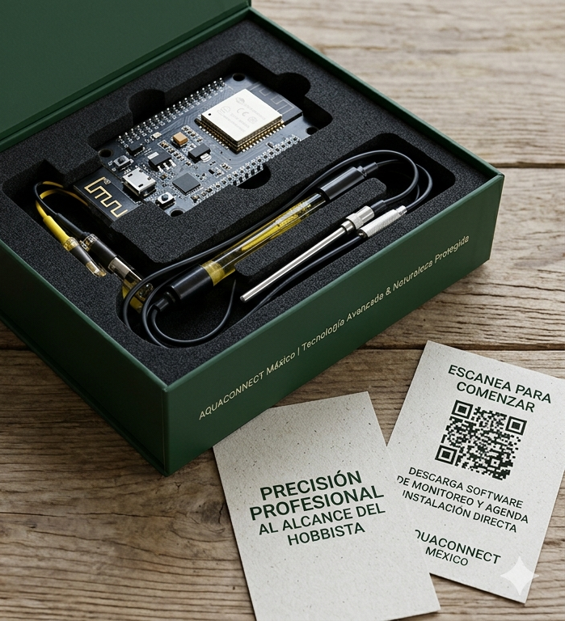

¿Dejarías $30,000 pesos en efectivo dentro de una caja de vidrio sin vigilancia?
En Aquaconnect México, no solo te vendemos un aparato; te brindamos tranquilidad y aseguramos la salud de tu ecosistema acuático. Precisión profesional al alcance del hobbista.
Conoce nuestros equipos
⚙️ Nuestro Equipo · Tecnología de Vanguardia
Nuestro producto estrella consiste en un circuito de bajo costo, soldado en placas personalizadas, equipado con un microcontrolador integrado ESP32 que permite el envío de datos vía WiFi en tiempo real.
Hardware adaptable
Al ser fabricantes, adaptamos componentes a las necesidades específicas de tu acuario.
Sensores estándar
Medición continua de pH, conductividad eléctrica y temperatura. Precisión profesional.
Software de gestión
Visualiza tendencias históricas y recibe alertas al celular para prevenir desastres.
Servicio integral
Hardware + instalación + software, eliminamos la barrera técnica. Instalación física incluida.
💰 Catálogo de inversión · Protege tu ecosistema
Valor de los ecosistemas en riesgo:
🔹 Un solo evento de sobrecalentamiento puede matar el 100% de los peces. Tu dispositivo paga su valor total con solo prevenir la muerte de un pez disco premium.
Descarga nuestra App de monitoreo y recibe alertas en tiempo real
Software incluido + instalación directa
Dispositivo Aquaconnect Individual
Incluye: hardware + software de monitoreo + instalación física.
Ahorro en reactivos: aprox. $1,200 MXN al año (menos kits químicos).
Acuario con historial de salud documentado, mayor valor de reventa.
ROI inmediato: equivalente al 6%-20% del valor total del tanque.
Solicitar asesoríaPaquete Comercial (5+ unidades)
Descuento del 20% para tiendas, criaderos y restaurantes.
Centraliza el control de múltiples tanques de exhibición.
Reduce horas hombre de supervisión manual.
Ideal para negocios con inventario vivo en Juriquilla o Centro Histórico.
Cotizar volumen🌊 ¿Por qué elegirnos? Expertos en los retos de Querétaro
Conocemos los factores críticos locales que afectan a acuaristas de la región. Nuestra tecnología diseñada para combatirlos.
Dureza del Agua (KH/GH)
El agua de la CEA (Comisión Estatal de Aguas) es muy alcalina. Nuestro software envía alertas inmediatas si el pH sube, indicando fallos en el sistema de CO₂ o buffers. Vital para peces disco y corales.
Oscilaciones térmicas extremas
Querétaro tiene cambios bruscos entre día y noche. Un fallo en el termostato en la madrugada es letal. La alerta al celular marca la diferencia entre un susto y una pérdida total.
Ventajas exclusivas
- Precisión profesional: sensores calibrados para monitoreo continuo.
- Software predictivo: tendencias históricas para prevenir desastres.
- Relación CRM: alertas preventivas, recordatorios de mantenimiento.
- Soporte local en Querétaro: instalación y servicio técnico garantizado.
📍 Cobertura y Ubicaciones · Presencia local
Ventas directas e instalación física en todo el estado de Querétaro. Alianzas en tiendas de acuarismo especializado.
Zonas de cobertura prioritaria:
📍 Centro histórico Querétaro, Universidad N21, Querétaro, Qro.
Atención: Lunes a Viernes 10am - 6pm, sábados con cita.
Aliados comerciales
Distribución en tiendas de acuarismo en Querétaro y venta directa para criadores profesionales.
Instalación express en acuarios comerciales de Antea y zonas concurridas.
📞 Contáctanos · Socios en el éxito de tu acuario
Solicita asesoría o cotización
Nuestro equipo responderá en menos de 24 horas. Recibirás información personalizada y recordatorios de mantenimiento (CRM).
Recibirás alertas preventivas y contenido técnico.
Atención directa
WhatsApp / Teléfono: 442 347 8325
Email: hola@aquaconnect.mx (consultas técnicas)
CRM activo: Acompañamiento continuo, alertas de mantenimiento y calibración.
“El software evitó un desastre de pH en mi tanque de discos. Recomiendo 100%” – Carlos M.